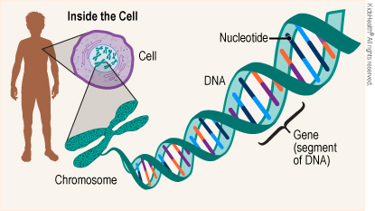
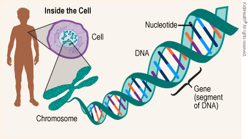

sample paragraph hufrjrkg
 

my days are not actually going well. I need to work a lot on myself but the saddest part is I keep on saying that. I should rather start doing that !! I should take my habit tracker seriously. I should control my mind. Do screen fasting and a lot more to improve . I cant simply waste my time. Afterall I feel that am very hardworking...i just need to work smart too!! And i love myself a little more everytime i do something productive!
C6H12O6
A+B8-3X2=
Autem eveniet dicta possimus blanditiis itaque, voluptas dolorum ea, exercitatio
nem doloribus, sequi omnis.